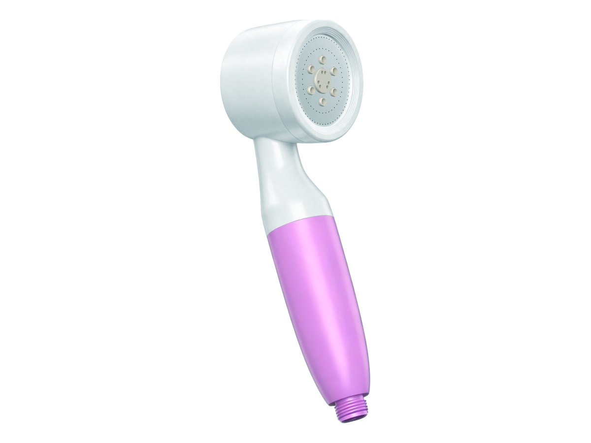
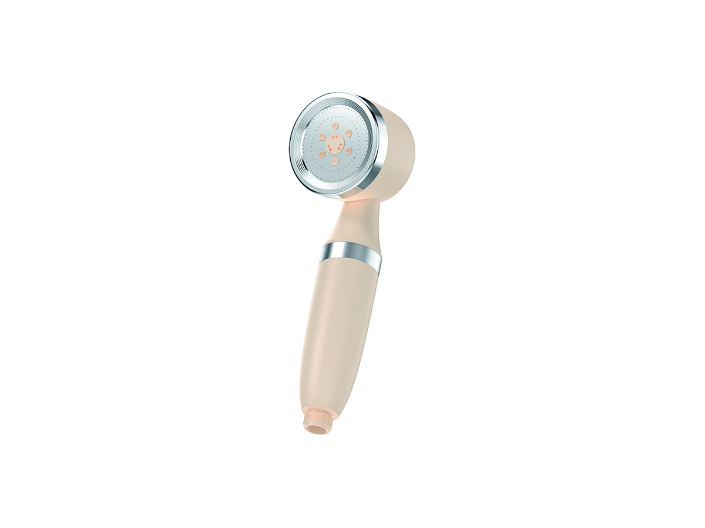

الدش
الدشRP-S01
فلتر دش يدوي
SKU: RP-S01
MOQ: يُؤكَّد عند الاستفسار
الرئيسية/المنتجات/فلاتر الدش/ RP-S07

فلاتر الدش
فلتر دش متعدد الأوضاع (JK-C1) — أربعة موديلات
RP-S07 وRP-S08 وRP-S05 وRP-S09 هي أربعة موديلات في عائلة فلاتر الدش متعددة الأوضاع نفسها. RP-S07 (أبيض-بنفسجي) وRP-S08 (بيج) وRP-S05 (أسود) هي الموديل نفسه بثلاثة ألوان؛ ويستخدم RP-S09 (بيج، حلقة ذهبية) القالب نفسه مع خرطوشة مركبة قطن PP + فيتامين C. تُؤكد المواصفات لكل موديل وطلب.
أربعة موديلات — ويمكن طلبها أيضاً باسمRP-S08 (بيج),RP-S05 (أسود)أوRP-S09 (فيتامين C).
الجهد / التردد قابل للتكوين حسب بلد الوجهة. تُؤكد التكوينات الأخرى لكل طلب.
RP-S07 هو فلتر دش متعدد الأوضاع (JK-C1) مع أربعة موديلات في العائلة نفسها. RP-S07 (أبيض-بنفسجي) وRP-S08 (بيج) وRP-S05 (أسود) هي الموديل نفسه بثلاثة ألوان؛ ويستخدم RP-S09 (بيج، حلقة ذهبية) القالب نفسه مع خرطوشة مركبة قطن PP + فيتامين C. ولدى الأربعة 7 أوضاع رش وضبط بلا درجات 360° وتوصيل G1/2. وبالنسبة لـ RP-S07 / RP-S08 / RP-S05 فإن قيم الكتالوج هي ضغط عمل 0.1–0.4 ميغاباسكال ودرجة حرارة ماء 5–60°C وتدفق ماء 5–7 لتر/دقيقة وعمر خرطوشة حوالي 3 أشهر؛ وقيم RP-S09 مؤكدة حسب الطلب. وتقدم الموديلات الثلاثة الأولى ثلاثة خيارات فلتر: ACF أو PP + رائحة فيتامين C أو قطن PP.
ما الحد الأدنى لكمية الطلب؟
الطلب الأول 200 وحدة لكل موديل، وإعادة الطلب 500 وحدة.
هل يمكنني طلب عينة قبل طلب بالجملة؟
نعم. العينات جاهزة خلال 15 يومًا، وتُسترد رسوم العينة عند أول طلب بالجملة. تستغرق الطلبات بالجملة 40 يومًا بعد اعتماد العينة وتُشحن FOB Shenzhen.
كيف أختار بين الموديلات الأربعة؟
RP-S07 وRP-S08 وRP-S05 هي الموديل نفسه بثلاثة ألوان (أبيض-بنفسجي وبيج وأسود). RP-S09 هو موديل فيتامين C على القالب نفسه، مع خرطوشة مركبة قطن PP + فيتامين C. اطلب باسم RP-S07 وحدد الموديل.
مرّر فوق صورة متغير لرؤية مواصفاته. على الشاشات اللمسية، انقر على صورة.



مواصفات كاملة لكل طراز، جنباً إلى جنب. جدول المواصفات أدناه يعرض قيم RP-S07.
| المواصفة | RP-S07-1 — أبيض-بنفسجي (JK-C1) | RP-S07-2 — بيج (JK-C2) | RP-S07-3 — أسود (JK-C1) | RP-S07-4 — فيتامين C (JK-C3) |
|---|---|---|---|---|
| اللون | أبيض-بنفسجي | بيج | أسود | بيج، حلقة ذهبية |
| الخرطوشة | 3 خيارات فلتر: ACF / PP + عطر فيتامين C / قطن PP | 3 خيارات فلتر: ACF / PP + عطر فيتامين C / قطن PP | 3 خيارات فلتر: ACF / PP + عطر فيتامين C / قطن PP | مركّب قطن PP + فيتامين C |
| أوضاع الرش | 7 | 7 | 7 | 7 |
| التحكم | ضبط بلا درجات 360° | ضبط بلا درجات 360° | ضبط بلا درجات 360° | ضبط بلا درجات 360° |
| التوصيل | G1/2 | G1/2 | G1/2 | G1/2 |
| ضغط العمل | 0.1-0.4 MPa | 0.1-0.4 MPa | 0.1-0.4 MPa | يُؤكد حسب الطلب |
| درجة حرارة الماء | 5-60°C | 5-60°C | 5-60°C | يُؤكد حسب الطلب |
| تدفق الماء | 5-7 L/min | 5-7 L/min | 5-7 L/min | يُؤكد حسب الطلب |
| عمر الخرطوشة | حوالي 3 أشهر | حوالي 3 أشهر | حوالي 3 أشهر | يُؤكد حسب الطلب |
ضغط العمل ودرجة الحرارة والتدفق وعمر الخرطوشة لـ RP-S07 / RP-S08 / RP-S05 هي قيم الكتالوج لهذا الموديل (كما هو مذكور في RP-S05)؛ وقيم RP-S09 مؤكدة حسب الطلب.
6 صفوف مواصفات من كتالوج ROPureOEM.
| أوضاع الرش | 7 |
|---|---|
| التحكم | ضبط بلا درجات 360° |
| التوصيل | G1/2 |
| الخرطوشة | 3 خيارات فلتر: ACF / PP + عطر فيتامين C / قطن PP |
| التدفق / الضغط / درجة الحرارة | 5-7 L/min / 0.1-0.4 MPa / 5-60°C |
| عمر الخرطوشة / الأبعاد | حوالي 3 أشهر / يُؤكد حسب الطلب |
المواصفات مأخوذة من كتالوج ROPureOEM. وعندما لا تكون القيمة مؤكدة بعد، تُدرج على أنها «مؤكدة لكل طلب» — ونحن لا ننشر أرقامًا غير مؤكدة.